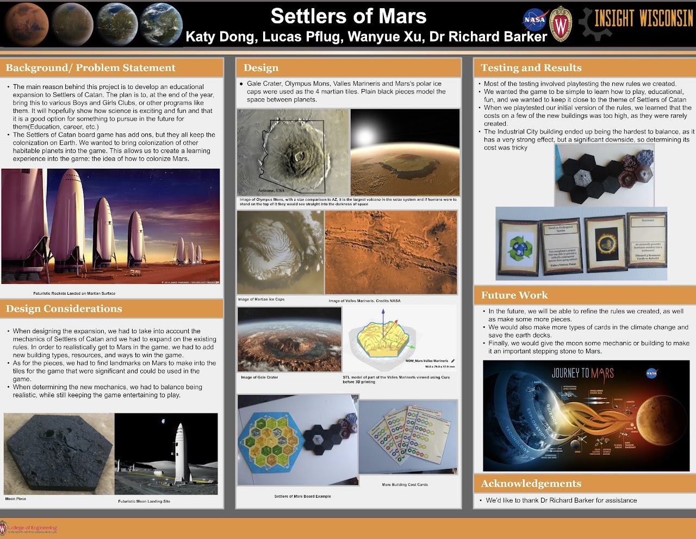

Settle Mars — and learn real space science doing it
A choose-your-own-adventure that blends Settlers of Catan, Dungeons & Dragons, and SimCity to teach space biology, biotech, and aerospace engineering. Play it three ways — in your browser, as an AI-guided role-play, or as a 3D-printed tabletop board.
Come to play, or come to build
However you like to learn — screen, imagination, or workshop — there's a way in.
Play the role game
Jump straight into the Lunar & Martian Frontier colony sim in your browser — grow a settlement on a 3D hex board, manage life-support, and race rival AI colonies. Or run a tabletop D&D-style adventure with an AI "Space Wizard" as your Dungeon Master.
Start playing →Build the board game
Download the 3D-printable STL files, print and paint the Martian and Lunar terrain pieces, lay out your hex map, and even generate custom AI board art. A hands-on lesson in additive manufacturing and game design.
See the build guide →A game that smuggles in the science
Every settlement built and resource traded mirrors a real challenge of surviving on another world.
Space biology
Grow crops, balance ecosystems, and keep a crew alive — the same problems NASA's space-biology programs actually study.
Engineering
Design habitats, power grids, and propulsion. Overcome "dragons" that are really engineering failures to solve.
Teamwork
Seven roles — Space Wizard, coder, medic, farmer, librarian — must collaborate, mirroring real scientific teams.
Strategy & chance
Catan-style dice drive resource surges; D&D-style rolls drive the story. Plan, adapt, and manage risk.
AI literacy
Use LLMs and image generators as game tools — a gentle, playful introduction to prompt engineering.
Making & design
3D-print the board, paint the terrain, remix the art. Additive manufacturing as a creative craft.
Born in the Insight Wisconsin inventors' club
"Settlers of Mars" started as a student prototype — a homemade board, a stack of dice, and a big question: could a game teach the science of living on another planet? It has since grown into 3D-printable pieces, AI-generated boards, five levels of AI Dungeon-Master prompts, and a full browser colony sim.
It's an open, remixable educational project — take it, teach with it, and share what you build.
Read the story & credits →
Ready to leave Earth?
Boot up the colony sim, or gather a crew and let an AI Space Wizard guide your first mission to Mars.